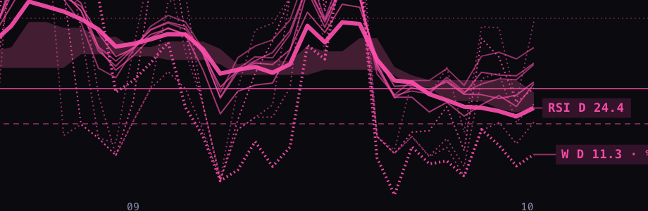
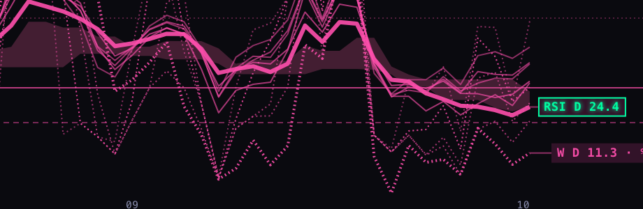
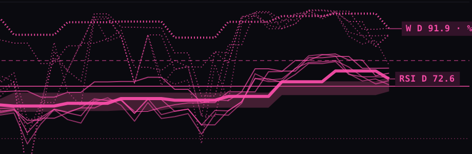
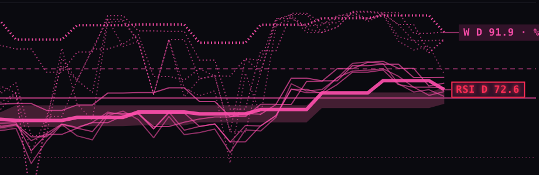
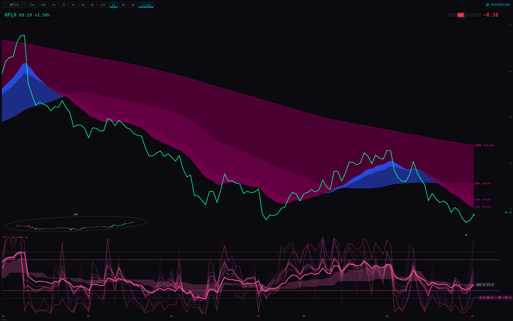
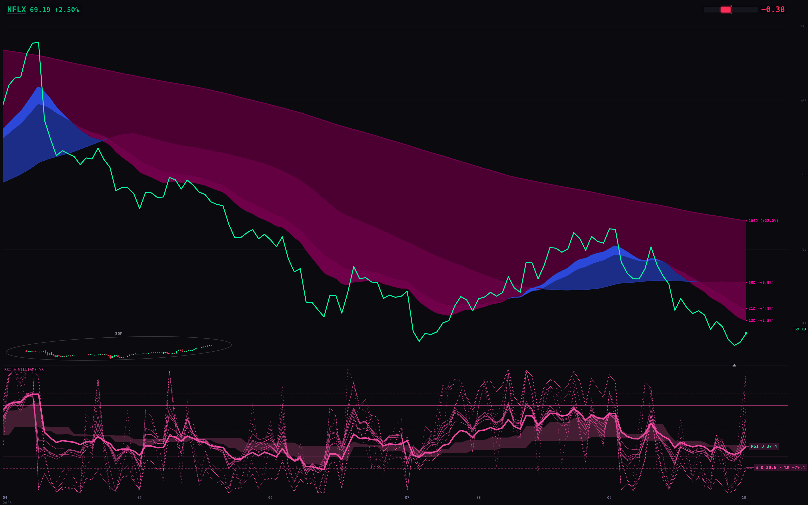
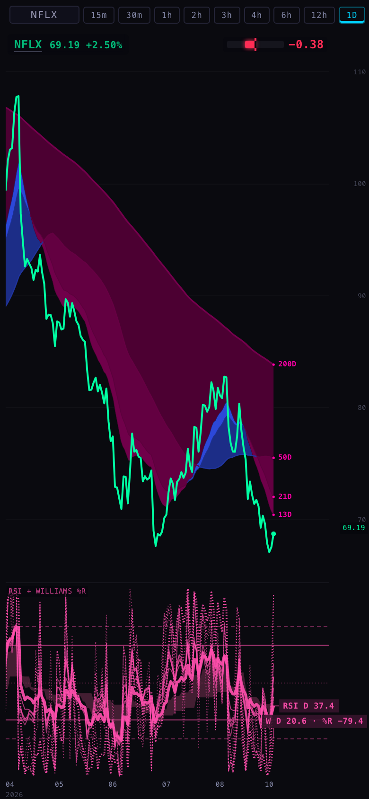
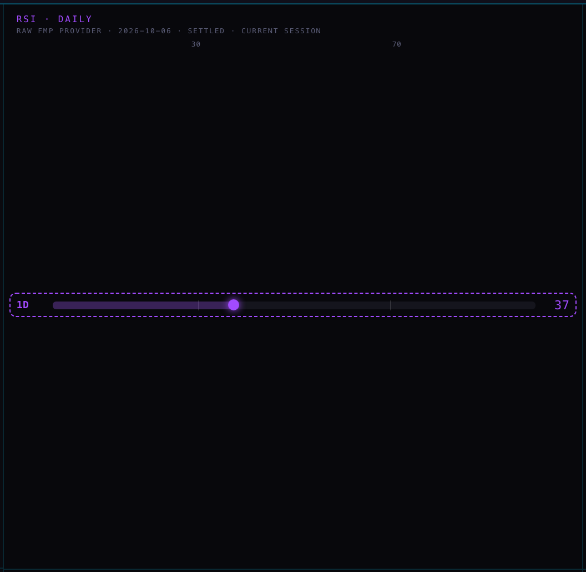
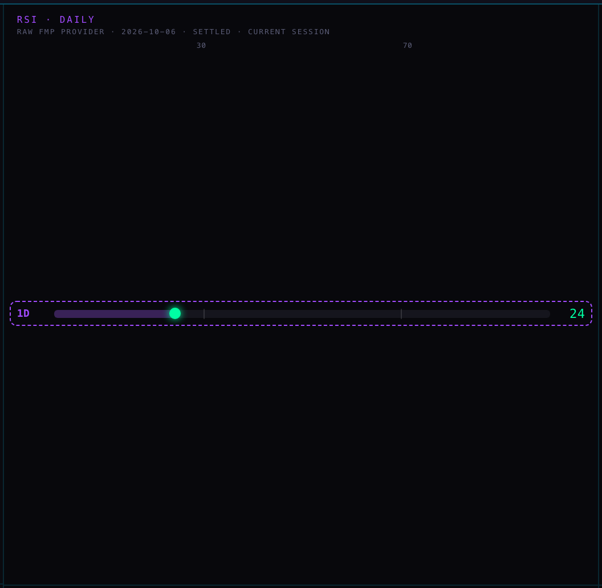
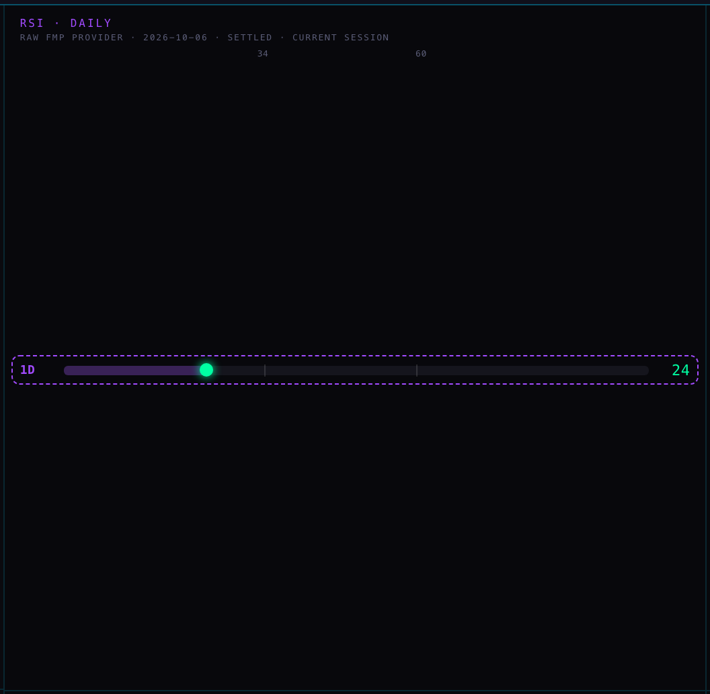

RS1 · STATION · THE DAILY RSI BY EACH NAME'S OWN EXTREMES
6 Oct 2026 · pictures retaken 2026-10-07 · preview only · nothing is live · branch station/rs1-rsi-own-extremes-20261006The chart's RSI chip — before, then after


24 — lower than 99% of TLT's last two years: full green, a steady glow, an edge.
 37 — lower than 76% of NFLX's last two years: tinted, not an own extreme, so no glow.
37 — lower than 76% of NFLX's last two years: tinted, not an own extreme, so no glow.

73 — higher than 96% of TSM's last two years: full red, a steady glow, an edge.


/geiger — the RSI · DAILY row, before then after

Marks at 30 and 70; 37 is not 30 or lower, so it is plain purple. Marks at Netflix's own 10th and 90th (31 and 71); hover: "37 — lower than 76% of NFLX's last two years".
Marks at Netflix's own 10th and 90th (31 and 71); hover: "37 — lower than 76% of NFLX's last two years".

Marks at 34 and 60; hover: "24 — lower than 99% of TLT's last two years".What was measured
| Pane | Before | After | Hover on the chip, after |
|---|---|---|---|
| NFLX · 1D | RSI D 37.4 · pink | RSI D 37.4 · rgb(58,215,165) | 37 — lower than 76% of NFLX's last two years |
| NFLX · 1D · in the Hub | RSI D 37.4 · pink | RSI D 37.4 · rgb(58,215,165) | 37 — lower than 76% of NFLX's last two years |
| TLT · 1D | RSI D 24.4 · pink | RSI D 24.4 · rgb(0,255,163) · steady glow + edge | 24 — lower than 99% of TLT's last two years |
| TSM · 4h | RSI D 72.6 · pink | RSI D 72.6 · rgb(255,45,85) · steady glow + edge | 73 — higher than 96% of TSM's last two years |
| SPY · 1D | RSI D 62.0 · pink | RSI D 62.0 · rgb(255,56,115) | 62 — higher than 69% of SPY's last two years |
| Hover with the pointer on the chip / off it | none | "37 — lower than 76% of NFLX's last two years · RSI(14) 37.36, source 1D, confirmed" / "" | |
| Daily-bar requests per pane (NFLX 1D · TSM 4h) | NFLX limit 240 + NFLX limit 642 · TSM limit 600 | NFLX limit 240 + NFLX limit 900 · TSM limit 900 — the same number of requests, the long one longer | |
| Chart pane reads of the database | 0 | 0 | |
| Page errors · writes attempted by the test browser (9 pages) | 0 · 0 | 0 · 0 | |
PAGE SPECS
What it shows. The Station's two daily-RSI readouts, read against each name's own last two years — the rule the Hub board's RSI column takes on the branch hub/rs1-rsi-own-extremes-20261006 (Alan, 6 Oct: "I see Netflix at 33 and I don't think that's green enough").
- The chart's "RSI D" chip (the wall, a chart alone, the Hub's company view): the number tints from the pane's pink toward green or red by where it sits in the name's own two years — full green at its own 10th percentile or lower, full red at its own 90th or higher — and at those own extremes it carries a steady glow and an edge. Steady, not breathing: the pane is a drawing that repaints when data changes, and a breath would mean repainting it sixty times a second. Resting the pointer on the chip shows the line in words.
- /geiger's RSI · DAILY row was the one Station place that judged by the textbook 30 / 70. With the name's own scale its two marks move to the name's own 10th and 90th and the dot and number follow.
Where each number comes from. The chart pane holds no database client and still holds none: it builds the scale in the browser from the daily bars it already reads for its ribbon (the same requests per ticker as before, the long one longer: NFLX limit 240 + NFLX limit 642 before, NFLX limit 240 + NFLX limit 900 after). /geiger reads the Hub's nightly table public.rsi_own_percentiles. Both use _indicators/station-rsi-own.js, which the tests run against the Hub loader's own rows so the two repos cannot drift.
The AFTER pictures of /geiger need a table that is not in the database yet. Its one read was answered from the Hub loader's dry run (the newest finished close when the pictures were taken, 2026-10-07) in the shape the database would send; everything else was live. Without the table /geiger shows exactly the BEFORE picture.
What could be wrong. The chip includes today's forming bar, the scale is finished sessions: intraday the chip says "today so far against the days before". A name with under a year of history keeps the pink chip and says so on hover. A name whose daily read returns fewer than two years says how long its window really is.
What was not done. Nothing is deployed. No own 10th / 90th guide lines were added to the oscillator pane (its look is the Indicator Lab's; its 30 / 70 guides are unchanged). /ranks and /reflow (coloured by rank across names) and the detail view's "bands 30 · 70" were left as they are.
Changed on 7 Oct. The branch now carries everything live has (the 6 Oct evening's Station work was merged in, with no conflict). One wording repair, shared with the Hub: a reading a hair inside a name's range used to be called "the lowest reading of X's last two years" when the name had been lower; 0 and 100 are now kept for the true ends. All pictures on this page were retaken on 7 Oct with that code.
Tests. tests/station-rs1-rsi-own-20261006.test.mjs (8, passing). The whole suite fails the same 18 tests on this branch as on live today (1,028 tests here, 1,020 on live).